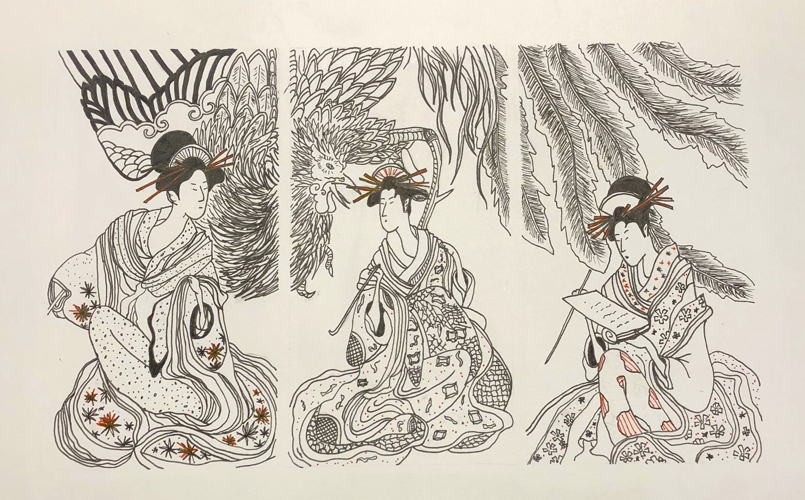
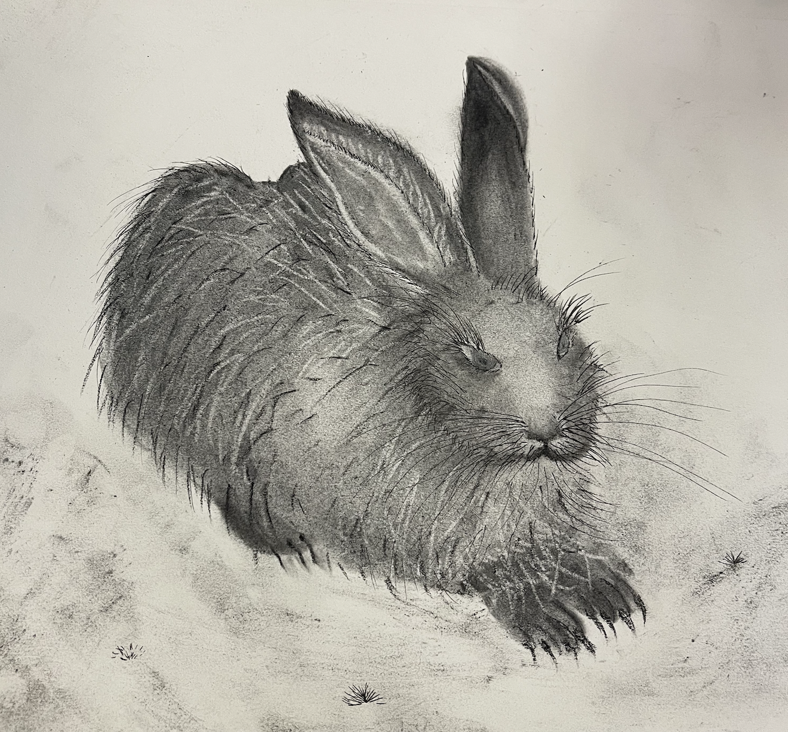
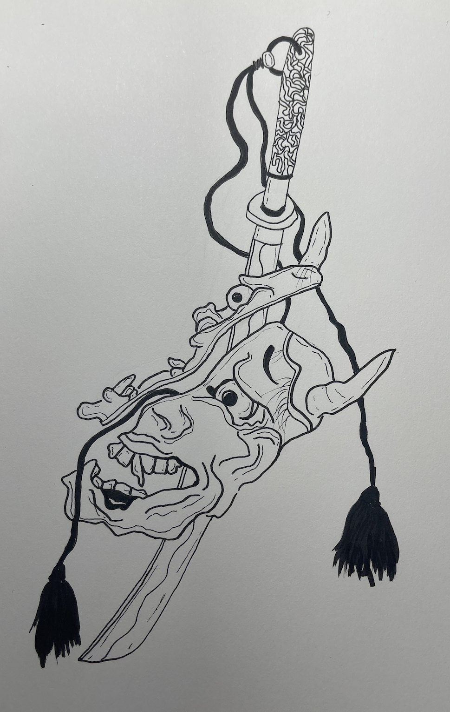

Drawings
Hisaye
Charcoal, Ink, Acrylic Paint, Ball Point Pen, and Washi Tape
May 2024

I created Hisaye purely out of imagination and through inspiration from artwork that is in my parent's house. I was inspired by Kabuki Art but wanted to make it more personalized to me.
Hisaye is my middle name and I wanted to showcase Traditional Japanese Patterns within this piece. On the collar of the subject, I wrote my mother and fathers middle names in Japanese. My mother and fathers family crest (Mon) is also displayed in this piece as well.
Picture In My Living Room
Colored pencils, pencil, and ink
October 2020

I created this picture directly inspired by a picture in my living room.
Three Ladies
Pen
May 2020
I did this drawing to focus on the patterns of kimonos and experimented with red ink.
Rabbit
Charcoal
April 2024
Made this drawing in one of my drawing classes. It was one of my first times using charcoal.
Gohan
Colored pencil
July 2021

I made this drawing before watching Dragon Ball Z. I ended up watching all of Dragon Ball Z and loved it.
Demon
Pen
April 2023
Japanese Demon